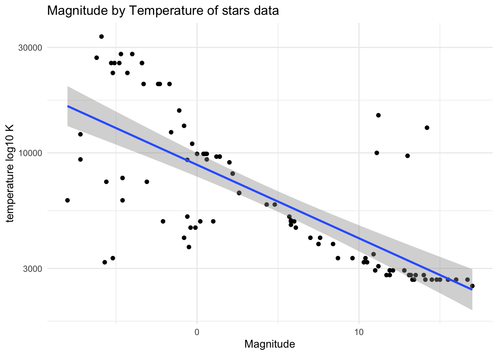

#load package
suppressPackageStartupMessages(library(dslabs))
suppressPackageStartupMessages(library(dplyr))
suppressPackageStartupMessages(library(ggplot2))
suppressPackageStartupMessages(library(plotly))R Coding Exercise
Review the gapminder dataset
#help for the gapminder data
help(gapminder)
#examine data structure
str(gapminder)'data.frame': 10545 obs. of 9 variables:
$ country : Factor w/ 185 levels "Albania","Algeria",..: 1 2 3 4 5 6 7 8 9 10 ...
$ year : int 1960 1960 1960 1960 1960 1960 1960 1960 1960 1960 ...
$ infant_mortality: num 115.4 148.2 208 NA 59.9 ...
$ life_expectancy : num 62.9 47.5 36 63 65.4 ...
$ fertility : num 6.19 7.65 7.32 4.43 3.11 4.55 4.82 3.45 2.7 5.57 ...
$ population : num 1636054 11124892 5270844 54681 20619075 ...
$ gdp : num NA 1.38e+10 NA NA 1.08e+11 ...
$ continent : Factor w/ 5 levels "Africa","Americas",..: 4 1 1 2 2 3 2 5 4 3 ...
$ region : Factor w/ 22 levels "Australia and New Zealand",..: 19 11 10 2 15 21 2 1 22 21 ...#summary of data
summary(gapminder) country year infant_mortality life_expectancy
Albania : 57 Min. :1960 Min. : 1.50 Min. :13.20
Algeria : 57 1st Qu.:1974 1st Qu.: 16.00 1st Qu.:57.50
Angola : 57 Median :1988 Median : 41.50 Median :67.54
Antigua and Barbuda: 57 Mean :1988 Mean : 55.31 Mean :64.81
Argentina : 57 3rd Qu.:2002 3rd Qu.: 85.10 3rd Qu.:73.00
Armenia : 57 Max. :2016 Max. :276.90 Max. :83.90
(Other) :10203 NA's :1453
fertility population gdp continent
Min. :0.840 Min. :3.124e+04 Min. :4.040e+07 Africa :2907
1st Qu.:2.200 1st Qu.:1.333e+06 1st Qu.:1.846e+09 Americas:2052
Median :3.750 Median :5.009e+06 Median :7.794e+09 Asia :2679
Mean :4.084 Mean :2.701e+07 Mean :1.480e+11 Europe :2223
3rd Qu.:6.000 3rd Qu.:1.523e+07 3rd Qu.:5.540e+10 Oceania : 684
Max. :9.220 Max. :1.376e+09 Max. :1.174e+13
NA's :187 NA's :185 NA's :2972
region
Western Asia :1026
Eastern Africa : 912
Western Africa : 912
Caribbean : 741
South America : 684
Southern Europe: 684
(Other) :5586 #examine class
class(gapminder)[1] "data.frame"Generate new objects containing values for African countries
# Create object called africadata with African countries only
africadata <- gapminder %>%
filter(continent == "Africa")
africadata <- africadata %>% filter(continent == "Africa")
# Create a new object with life expectancy and infant mortality from africadata
africa_mort_expect <- africadata %>%
select(infant_mortality, life_expectancy)
# View structure and summary of the mortality and life expectancy data
str(africa_mort_expect)'data.frame': 2907 obs. of 2 variables:
$ infant_mortality: num 148 208 187 116 161 ...
$ life_expectancy : num 47.5 36 38.3 50.3 35.2 ...summary(africa_mort_expect) infant_mortality life_expectancy
Min. : 11.40 Min. :13.20
1st Qu.: 62.20 1st Qu.:48.23
Median : 93.40 Median :53.98
Mean : 95.12 Mean :54.38
3rd Qu.:124.70 3rd Qu.:60.10
Max. :237.40 Max. :77.60
NA's :226 # Create a new object with population and life expectancy from African data
africa_pop_expect <- africadata %>%
select(population, life_expectancy)
# View structure and summary of the population and life expectancy data
str(africa_pop_expect)'data.frame': 2907 obs. of 2 variables:
$ population : num 11124892 5270844 2431620 524029 4829291 ...
$ life_expectancy: num 47.5 36 38.3 50.3 35.2 ...summary(africa_pop_expect) population life_expectancy
Min. : 41538 Min. :13.20
1st Qu.: 1605232 1st Qu.:48.23
Median : 5570982 Median :53.98
Mean : 12235961 Mean :54.38
3rd Qu.: 13888152 3rd Qu.:60.10
Max. :182201962 Max. :77.60
NA's :51 create plots using newly created objects
When plotted, there are distinct “streaks” in the data. This is especially evident in the Life Expectancy vs log\(_{10}\) Population, These streaks likely represent the trajectory of individual countries over time. In general, as levels of development improve, so do health outcomes like life expectancy.
Note: in both plots there is an outlier showing a visible decrease in life expectancy. Without countries or years in the plots, it is difficult to pin point the exact cause of that decrease, but it is likely due to a single, tranformational event. In this case, I would attribute that to the civil war and genocide in Rwanda in the early 1990s.
library(ggplot2)
# Plot life expectancy as a function of infant mortality
plot_le_vs_im <- ggplot(africa_mort_expect, aes(x = infant_mortality, y = life_expectancy)) +
geom_point() +
theme_minimal() +
labs(title = "Life Expectancy vs Infant Mortality",
x = "Infant Mortality",
y = "Life Expectancy")
plot_le_vs_imWarning: Removed 226 rows containing missing values (`geom_point()`).
#plot life expectancy vs population with population on a log scale
plot_le_vs_pop_log <- ggplot(africa_pop_expect, aes(x = population, y = life_expectancy)) +
geom_point() +
theme_minimal() +
labs(title = "Life Expectancy vs Population",
x = "Population (Log Scale)",
y = "Life Expectancy") +
scale_x_log10()
plot_le_vs_pop_logWarning: Removed 51 rows containing missing values (`geom_point()`).
Identifying years without missing values for infant mortality
#identify years with missing data using dplyr package
africadata %>%
group_by(year) %>%
summarize(missing_infant_mortality = sum(is.na(infant_mortality))) %>%
filter(missing_infant_mortality > 0)# A tibble: 23 × 2
year missing_infant_mortality
<int> <int>
1 1960 10
2 1961 17
3 1962 16
4 1963 16
5 1964 15
6 1965 14
7 1966 13
8 1967 11
9 1968 11
10 1969 7
# ℹ 13 more rowscreating object from africadata for the year 2000
# filter data for year == 2000
africadata2000 <- africadata %>%
filter(year == 2000)
#examine the structure and summary of africadata2000
str(africadata2000)'data.frame': 51 obs. of 9 variables:
$ country : Factor w/ 185 levels "Albania","Algeria",..: 2 3 18 22 26 27 29 31 32 33 ...
$ year : int 2000 2000 2000 2000 2000 2000 2000 2000 2000 2000 ...
$ infant_mortality: num 33.9 128.3 89.3 52.4 96.2 ...
$ life_expectancy : num 73.3 52.3 57.2 47.6 52.6 46.7 54.3 68.4 45.3 51.5 ...
$ fertility : num 2.51 6.84 5.98 3.41 6.59 7.06 5.62 3.7 5.45 7.35 ...
$ population : num 31183658 15058638 6949366 1736579 11607944 ...
$ gdp : num 5.48e+10 9.13e+09 2.25e+09 5.63e+09 2.61e+09 ...
$ continent : Factor w/ 5 levels "Africa","Americas",..: 1 1 1 1 1 1 1 1 1 1 ...
$ region : Factor w/ 22 levels "Australia and New Zealand",..: 11 10 20 17 20 5 10 20 10 10 ...summary(africadata2000) country year infant_mortality life_expectancy
Algeria : 1 Min. :2000 Min. : 12.30 Min. :37.60
Angola : 1 1st Qu.:2000 1st Qu.: 60.80 1st Qu.:51.75
Benin : 1 Median :2000 Median : 80.30 Median :54.30
Botswana : 1 Mean :2000 Mean : 78.93 Mean :56.36
Burkina Faso: 1 3rd Qu.:2000 3rd Qu.:103.30 3rd Qu.:60.00
Burundi : 1 Max. :2000 Max. :143.30 Max. :75.00
(Other) :45
fertility population gdp continent
Min. :1.990 Min. : 81154 Min. :2.019e+08 Africa :51
1st Qu.:4.150 1st Qu.: 2304687 1st Qu.:1.274e+09 Americas: 0
Median :5.550 Median : 8799165 Median :3.238e+09 Asia : 0
Mean :5.156 Mean : 15659800 Mean :1.155e+10 Europe : 0
3rd Qu.:5.960 3rd Qu.: 17391242 3rd Qu.:8.654e+09 Oceania : 0
Max. :7.730 Max. :122876723 Max. :1.329e+11
region
Eastern Africa :16
Western Africa :16
Middle Africa : 8
Northern Africa : 6
Southern Africa : 5
Australia and New Zealand: 0
(Other) : 0 new plots using only data from the year 2000 in the africadata file
# plot infant mortality vs life expectancy for year=2000
plot_le_vs_im_2000 <- ggplot(africadata2000, aes(x = infant_mortality, y = life_expectancy)) +
geom_point() +
theme_minimal() +
labs(title = "Life Expectancy vs Infant Mortality, year=2000",
x = "Infant Mortality",
y = "Life Expectancy")
plot(plot_le_vs_im_2000)
# plot life expectancy vs population (log10) for year=2000
plot_le_vs_pop_log_2000 <- ggplot(africadata2000, aes(x = population, y = life_expectancy)) +
geom_point() +
theme_minimal() +
labs(title = "Life Expectancy vs Population Year = 2000",
x = "Population (Log Scale)",
y = "Life Expectancy") +
scale_x_log10()
plot_le_vs_pop_logWarning: Removed 51 rows containing missing values (`geom_point()`).linear models
life_expectancy~infant_mortality
fit1 <- lm(life_expectancy ~ infant_mortality, data = africadata2000)
summary(fit1)
Call:
lm(formula = life_expectancy ~ infant_mortality, data = africadata2000)
Residuals:
Min 1Q Median 3Q Max
-22.6651 -3.7087 0.9914 4.0408 8.6817
Coefficients:
Estimate Std. Error t value Pr(>|t|)
(Intercept) 71.29331 2.42611 29.386 < 2e-16 ***
infant_mortality -0.18916 0.02869 -6.594 2.83e-08 ***
---
Signif. codes: 0 '***' 0.001 '**' 0.01 '*' 0.05 '.' 0.1 ' ' 1
Residual standard error: 6.221 on 49 degrees of freedom
Multiple R-squared: 0.4701, Adjusted R-squared: 0.4593
F-statistic: 43.48 on 1 and 49 DF, p-value: 2.826e-08linear models
life_expectancy~population
fit2 <- lm(life_expectancy ~ population, data = africadata2000)
summary(fit2)
Call:
lm(formula = life_expectancy ~ population, data = africadata2000)
Residuals:
Min 1Q Median 3Q Max
-18.429 -4.602 -2.568 3.800 18.802
Coefficients:
Estimate Std. Error t value Pr(>|t|)
(Intercept) 5.593e+01 1.468e+00 38.097 <2e-16 ***
population 2.756e-08 5.459e-08 0.505 0.616
---
Signif. codes: 0 '***' 0.001 '**' 0.01 '*' 0.05 '.' 0.1 ' ' 1
Residual standard error: 8.524 on 49 degrees of freedom
Multiple R-squared: 0.005176, Adjusted R-squared: -0.01513
F-statistic: 0.2549 on 1 and 49 DF, p-value: 0.6159Interpreting the results for the linear models
fit1 examines the relationship between life expectancy and infant mortality, where life expectancy is the dependent variable
given the low p-value, there is a statistically significant negative relationship between life expectancy and infant mortality
fit2 examines the relationship between life expectancy and population, where life expectancy is the dependent variable.
given the high p-value the model does not indicate a statistically significant relationship between life expectancy and population
The section below was contributed by Xylem Hu
Review the stars dataset
#help for the stars data
help(stars)Help on topic 'stars' was found in the following packages:
Package Library
dslabs /Library/Frameworks/R.framework/Versions/4.3-arm64/Resources/library
graphics /Library/Frameworks/R.framework/Versions/4.3-arm64/Resources/library
Using the first match ...#examine data structure
str(stars)'data.frame': 96 obs. of 4 variables:
$ star : Factor w/ 95 levels "*40EridaniA",..: 87 85 48 38 33 92 49 79 77 47 ...
$ magnitude: num 4.8 1.4 -3.1 -0.4 4.3 0.5 -0.6 -7.2 2.6 -5.7 ...
$ temp : int 5840 9620 7400 4590 5840 9900 5150 12140 6580 3200 ...
$ type : chr "G" "A" "F" "K" ...#summary of data
summary(stars) star magnitude temp type
Altair : 2 Min. :-8.000 Min. : 2500 Length:96
*40EridaniA: 1 1st Qu.:-1.800 1st Qu.: 3168 Class :character
*40EridaniB: 1 Median : 2.400 Median : 5050 Mode :character
*40EridaniC: 1 Mean : 4.257 Mean : 8752
*61CygniA : 1 3rd Qu.:11.325 3rd Qu.: 9900
*61CygniB : 1 Max. :17.000 Max. :33600
(Other) :89 #examine class
class(stars)[1] "data.frame"generate new objects only containing name, magnitude and temprature
# Create a new object dropping type out
starsdata <- stars %>%
select(star,magnitude,temp)
# View structure and summary of the mortality and life expectancy data
str(starsdata)'data.frame': 96 obs. of 3 variables:
$ star : Factor w/ 95 levels "*40EridaniA",..: 87 85 48 38 33 92 49 79 77 47 ...
$ magnitude: num 4.8 1.4 -3.1 -0.4 4.3 0.5 -0.6 -7.2 2.6 -5.7 ...
$ temp : int 5840 9620 7400 4590 5840 9900 5150 12140 6580 3200 ...summary(starsdata) star magnitude temp
Altair : 2 Min. :-8.000 Min. : 2500
*40EridaniA: 1 1st Qu.:-1.800 1st Qu.: 3168
*40EridaniB: 1 Median : 2.400 Median : 5050
*40EridaniC: 1 Mean : 4.257 Mean : 8752
*61CygniA : 1 3rd Qu.:11.325 3rd Qu.: 9900
*61CygniB : 1 Max. :17.000 Max. :33600
(Other) :89 # Create a new object showing stars' type
starstype <- stars %>%
select(star,type)
summary(starsdata) star magnitude temp
Altair : 2 Min. :-8.000 Min. : 2500
*40EridaniA: 1 1st Qu.:-1.800 1st Qu.: 3168
*40EridaniB: 1 Median : 2.400 Median : 5050
*40EridaniC: 1 Mean : 4.257 Mean : 8752
*61CygniA : 1 3rd Qu.:11.325 3rd Qu.: 9900
*61CygniB : 1 Max. :17.000 Max. :33600
(Other) :89 Thought: After dataset review, I found that there are 4 variables in this dataset and “type” might not be so helpful for me to do the following data analysis so I tried to generate a new object only including star name, magnitude and temperature. As for star type, later I was thinking that if I can make a summary table only for it.
summary tables and figures
#summary tables
summary_df = skimr::skim(starsdata)
print(summary_df)── Data Summary ────────────────────────
Values
Name starsdata
Number of rows 96
Number of columns 3
_______________________
Column type frequency:
factor 1
numeric 2
________________________
Group variables None
── Variable type: factor ───────────────────────────────────────────────────────
skim_variable n_missing complete_rate ordered n_unique
1 star 0 1 FALSE 95
top_counts
1 Alt: 2, *40: 1, *40: 1, *40: 1
── Variable type: numeric ──────────────────────────────────────────────────────
skim_variable n_missing complete_rate mean sd p0 p25 p50
1 magnitude 0 1 4.26 7.35 -8 -1.8 2.4
2 temp 0 1 8752. 7728. 2500 3168. 5050
p75 p100 hist
1 11.3 17 ▇▇▅▆▆
2 9900 33600 ▇▂▁▁▁summary_df = skimr::skim(starstype)
print(summary_df)── Data Summary ────────────────────────
Values
Name starstype
Number of rows 96
Number of columns 2
_______________________
Column type frequency:
character 1
factor 1
________________________
Group variables None
── Variable type: character ────────────────────────────────────────────────────
skim_variable n_missing complete_rate min max empty n_unique whitespace
1 type 0 1 1 2 0 10 0
── Variable type: factor ───────────────────────────────────────────────────────
skim_variable n_missing complete_rate ordered n_unique
1 star 0 1 FALSE 95
top_counts
1 Alt: 2, *40: 1, *40: 1, *40: 1# save to file
#summarytable1_file = here("coding-exercise","results", "table-files", "summarytable_stars.rds")
#saveRDS(summary_df, file = summarytable1_file)
#summarytable2_file = here("coding-exercise","results", "table-files", "summarytable_star_type.rds")
#saveRDS(summary_df, file = summarytable2_file)
# scatter plot magnitude by temperature
plot_stars <- ggplot(starsdata, aes(x = magnitude, y = temp)) +
geom_point() +
theme_minimal() +
scale_y_log10("temperature log10 K") +
geom_smooth(method='lm') +
labs(title = "Magnitude by Temperature of stars data",
x = "Magnitude",
y = "Temprature")
plot(plot_stars)`geom_smooth()` using formula = 'y ~ x'
# save to file
#starsplot_file = here("coding-exercise","results", "figure-files", "scatterplot_stars.rds")
#saveRDS(plot, file = starsplot_file)linear models
stars_fit1 <- lm(log10(temp) ~ magnitude, data = starsdata)
summary(stars_fit1)
Call:
lm(formula = log10(temp) ~ magnitude, data = starsdata)
Residuals:
Min 1Q Median 3Q Max
-0.63032 -0.09773 -0.04181 0.08367 0.63983
Coefficients:
Estimate Std. Error t value Pr(>|t|)
(Intercept) 3.946035 0.027006 146.12 <2e-16 ***
magnitude -0.033234 0.003191 -10.42 <2e-16 ***
---
Signif. codes: 0 '***' 0.001 '**' 0.01 '*' 0.05 '.' 0.1 ' ' 1
Residual standard error: 0.2287 on 94 degrees of freedom
Multiple R-squared: 0.5358, Adjusted R-squared: 0.5309
F-statistic: 108.5 on 1 and 94 DF, p-value: < 2.2e-16# save to file
#stars_fit1_file = here("coding-exercise","results", "linear-model", "stars_fit1.rds")
#saveRDS(stars_fit1, file = stars_fit1_file)Thought: From the scatter plot I had a guess that there may be a negative correlation between temperature and magnitude of the stars. But at first when I use original numbers of temperature, the plot was more likely a curve so I added log10 scale on temperature and then it bacame a little bit more linear. After that I used lm function to fit temperature as a outcome and magnitude as a predictor. The result showed that magnitude had significant effect on temperature.